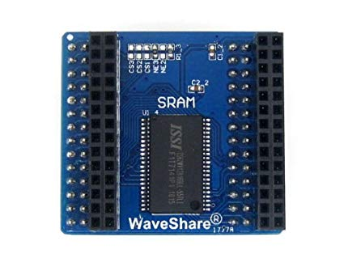

Статическая (SRAM)
ОЗУ, которое не надо регенерировать (обычно схемотехнически выполненное в виде массива триггеров), называют статической памятью с произвольным доступом или просто статической памятью. Достоинство этого вида памяти — скорость. Поскольку триггеры являются соединением нескольких логических вентилей, а время задержки на вентиль очень мало, то и переключение состояния триггера происходит очень быстро. Данный вид памяти не лишён недостатков. Во-первых, группа транзисторов, входящих в состав триггера, обходится дороже, чем ячейка динамической памяти, даже если они изготавливаются групповым методом миллионами на одной кремниевой подложке. Кроме того, группа транзисторов занимает гораздо больше площади на кристалле, чем ячейка динамической памяти, поскольку триггер состоит минимум из 2 вентилей (шести-восьми транзисторов), а ячейка динамической памяти — только из одного транзистора и одного конденсатора. Используется для организации сверхбыстродействующего ОЗУ, обмен информацией с которым критичен для производительности системы.
